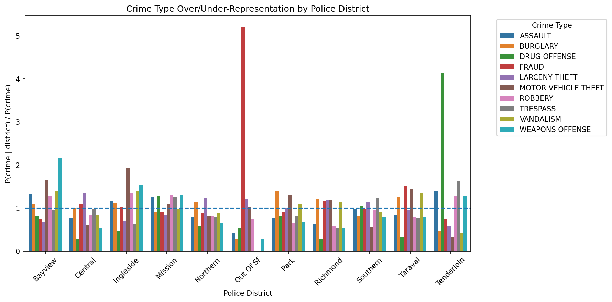

Introduction
San Francisco is often talked about as if crime follows the same pattern across the whole city, but the data suggests otherwise. In reality, crime is distributed quite unevenly, with different police districts showing very different patterns. Some types of crime happen much more often in certain areas than you would expect based on the city-wide average.
This analysis focuses specifically on drug offenses
strong>. First, it compares how different types of crime are over- or under-represented across districts. Then, it takes a closer look at where drug offenses are concentrated geographically, and finally, it examines how these patterns change over time within each district.1. Crime profiles differ across districts
The figure below compares different types of crime across police districts in San Francisco using the ratio P(crime | district) / P(crime). This ratio shows how common a specific crime is in a district compared to how common it is across the whole city. A value of 1 means the crime occurs at the city average, values above 1 mean it happens more often than expected in that district, and values below 1 mean it happens less often.
This kind of normalization is important because districts vary a lot in how many total crimes they report. Without adjusting for that, it would be hard to fairly compare them. Instead of just showing where the most crime happens, this approach helps highlight where certain types of crime are unusually common or rare.
From the chart, it is clear that crime is not evenly distributed across the city. Different districts have very different crime profiles, with some crime types strongly concentrated in specific areas while others are relatively uncommon. This suggests that crime in San Francisco is influenced by local factors like geography, social conditions, and economic differences, rather than being spread evenly across neighborhoods.

Figure 1. Crime type over- and under-representation by police district. Values above 1 indicate that a crime occurs more frequently in that district than in the city overall.
2. Drug offenses stand out geographically
Among the crime types shown in the district profile chart, drug offenses stand out as especially uneven across San Francisco. To make this clearer, the next map focuses only on drug offenses using the ratio P(drug offense | district) / P(drug offense). This helps show where drug-related incidents are unusually common compared to the city average.
A clear spatial pattern appears right away. The Tenderloin stands out strongly, with drug offenses happening much more often than expected. In contrast, most other districts are around or below 1, meaning drug-related incidents are less common there relative to the overall crime distribution.
So instead of being spread evenly across the city, drug offenses seem to be concentrated in just a few areas. This points to the importance of local factors, like population density, housing conditions, policing strategies, or the presence of open-air drug markets, in shaping where these incidents occur.
This pattern also matches what is often reported about San Francisco, where the Tenderloin has long been known for visible street-level drug activity.
Figure 2. Geographic distribution of drug offense over- and under-representation across San Francisco police districts. Warmer colors indicate districts where drug offenses occur more frequently than the city-wide average.
3. The concentration persists over time
Looking at geography alone doesn not tell us whether this pattern is stable or just temporary. The interactive chart below adds a time dimension by showing how the over-representation of drug offenses in each district changes over the years.
By pressing play or using the slider, you can see whether the same districts stay above the city average or if things shift over time. This helps separate short-term changes from more long-term patterns.
From the visualization, it seems that this is not just a one-time spike. Districts like the Tenderloin show up above average again and again across multiple years, suggesting that the concentration of drug offenses is persistent.
This reinforces the earlier observation: drug offenses in San Francisco are not only geographically concentrated, but also relatively stable over time. Together, these patterns suggest that deeper factors, such as social conditions, economic differences, or institutional practices, are influencing where these incidents occur.
Figure 3. Drug offense over- and under-representation by district over time. The dashed line at 1 marks the city-wide average.
Conclusion
This reinforces the earlier observation: drug offenses in San Francisco are not only geographically concentrated, but also relatively stable over time. Together, these patterns suggest that deeper factors, such as social conditions, economic differences, or institutional practices, are influencing where these incidents occur.
The Tenderloin stands out clearly, both geographically and over time. This suggests that the pattern we see is not just a one-year spike, but something more consistent. At the same time, it is important to be careful with this kind of data. Reported crime does not only reflect what people are doing, it is also influenced by policing practices, reporting behavior, and broader social conditions.
References
- DataSF. Police Department Incident Reports: Historical 2003 to May 2018 . City and County of San Francisco Open Data Portal.
- DataSF. Police Department Incident Reports: 2018 to Present . City and County of San Francisco Open Data Portal.
- Segel, E. & Heer, J. (2010). Narrative visualization: Telling stories with data. IEEE Transactions on Visualization and Computer Graphics, 16(6).
- Richardson, Schultz, Crawford (2019). Dirty Data, Bad Predictions: How Civil Rights Violations Impact Police Data, Predictive Policing Systems, and Justice.
- Background reporting on drug activity and public safety conditions in the Tenderloin from major local news outlets such as the San Francisco Chronicle